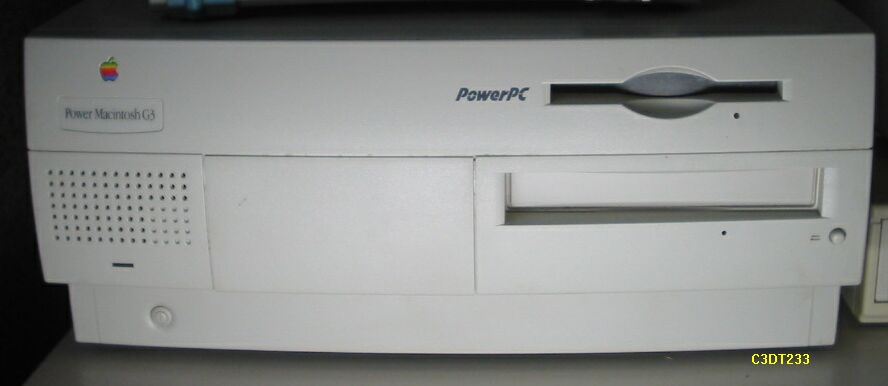

G3DT233

このG3DT233は、最近、近所のハードオフのジャンクコーナに、ハードディスクが抜かれて、 本体のみで１万円、の値札が付けられていたのを買ってきたものです。内容は以下の
ようになっていました。
・CPU PPC750 233MHz2次キャッシュ512KB（177MHz）
・HD ATA 抜かれていた。(Quantu3GBを入れた)
・CDROM ATAPI 24倍速
・FDD
・RAM 96MB （32MBを追加し、128MB）
・VRAM 2MB
購入時は、OS9のCDROMからの起動OKだったが、HDを入れてから試験調整を要する。OLD-PC のページなので、G3マシンは、趣旨に添わないかもしれませんが、初代G3ということで、
十分い古くなったいるので、いいことにしてもらいたいと思います。（2002/7/3記）
G3DT233にHD取り付け
Quantumの3GBが余っていたので、MACには相性がよいだろうと考え、早速シャーシの 底の、プライマリーIDEコネクタに取り付けた。CDROMから起動して、ユーティリティ
の、ドライブ設定を起動したが、HDが認識されない。マスター、スレーブの設定など 関係ないはずだし、接触不良もなさそうなので、悪いところはなさそうだ。日付と
時間を設定しろといっているので、とりあえず電池を調べる。テスタで当たると0ボルト だったので、電池を交換。再度、CDROMから起動して、ユーティリティの、ドライブ設定を
起動すると、今度はHDが認識されている。AT互換機では、CMOSバックアップ用の電池 が無いと、起動すらしないものがあるので、こんなこともあるのかとな。後は、HDを
フォーマットし、OS9をインストール、最初は少しもたつきましたが、この二日間順調に 動作しています。今回はここまでとします。(2002/7/4記)
CPUのクロックアップ
HDDがおかしくなり、起動しなくなったので、今度はSEAGATEのST33221Aに交換した。これもあまり新しい物ではないが、
調子よく動作するようになった。ついでに、CPUのクロックアップをやってみた。TACさんの記事によると、せいぜい１ランク
がいいところとらしいので、あまり期待せずに233MHz→266MHzにしてみたら全く問題なく動作。そこで300MHzにしてみた。
これもあっけなく動作。これで十分なので、後は、安定度を確保するため、ヒートシンクに小型のFANを付けた。これもTAC
さんの記事のように、ヒートシンクの横に付け、ヒートシンクに風が当たるようにした。手で触った感じではよく冷えている。
これで、OSのアップデートなど１時間以上連続運転したが、全く安定している。(2003/07/15 記)
PPCマッキントッシュのページに戻る